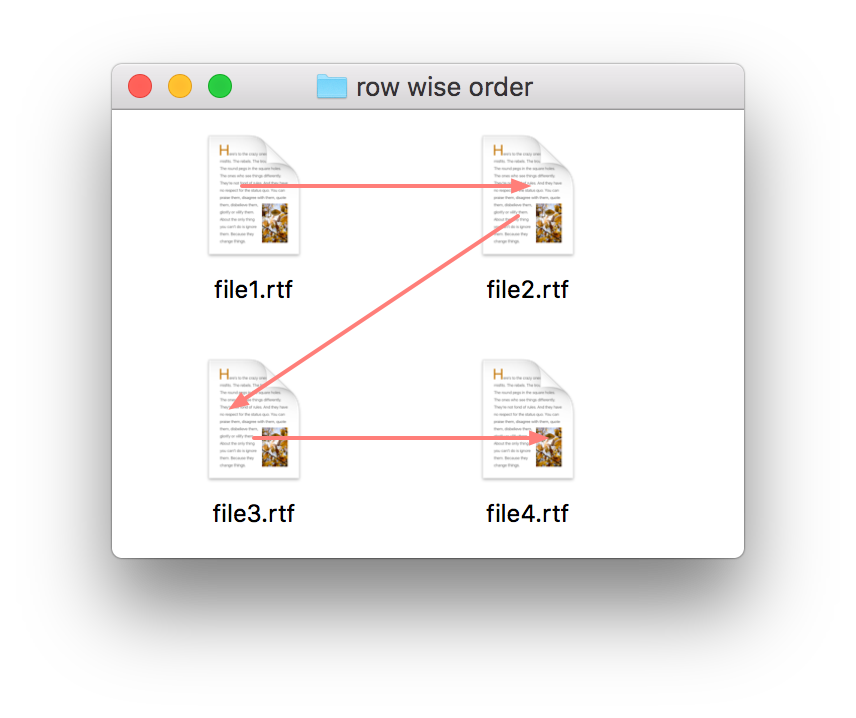
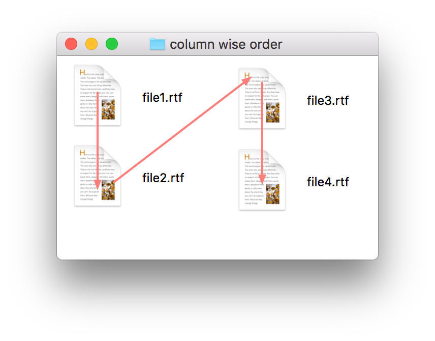

FileSorter is an AppleScript library to sort a list of files and folders according to the order arranged in the Finder. This library help to utilize the Finder as a user interface for customizing sorting order of a file list.
The sorting method is automatically changed depeding on a kind of a Finder window of icon view, list view and column view.
The sorting order of a list of files is determined as follows depending on the view styles.
When the option "Keep arranged by" is ON, a list of files is sorted with the specified property.
On the other cases, the sorting order is determined by the icon positions. It can be customized whether row wise sorting or column wise sorting by delegate method is_rowwise_for_iconview. The default behavior depends on the label position. When the label position is bottom, the sorting order is row wise. When the label position is right, the sorting order is column wise.

row wise sorting

column wise sorting
Sort as arranged in the list view/cover flow view. For example, if the list view is sorted with modification date, the result of FileSorter is sorted with modification date.
Sort with file names in ascending order.